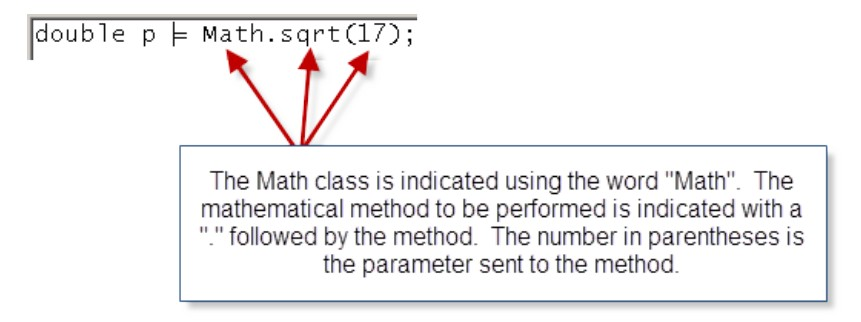
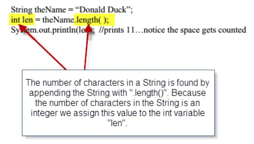
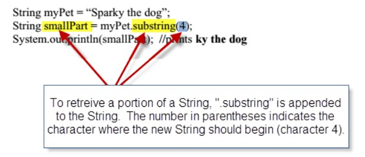
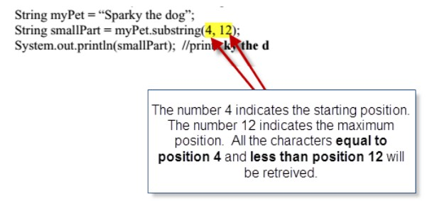
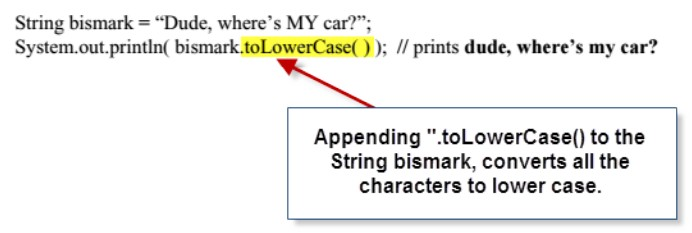
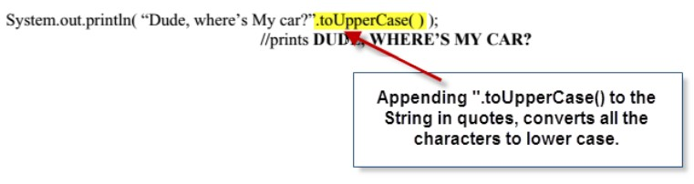
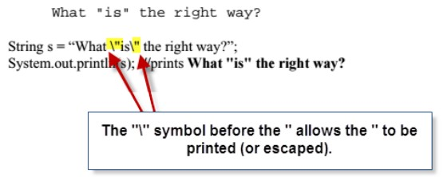
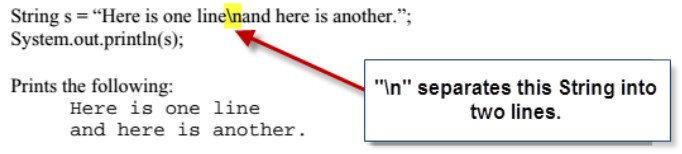
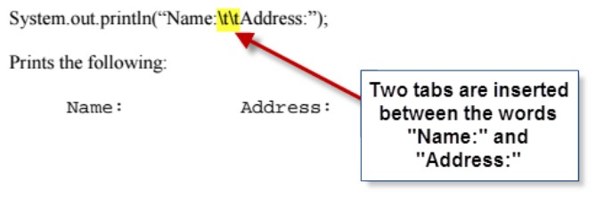

Set 5: Methods of the Math Class
Skill 5.1 Use the java math class to perform mathematical operations
The math class is a powerful class of methods for performing mathematical computations. An
example of how the math class can be applied is illustrated below. The example below computes
the square root of 17. The result is assigned to the double variable p because square roots
typically do not result in integer values.
double p = Math.square(17);
In the above example,
- double p is the variable to which the result of the Math operation is assigned
- Math. is the notation we used to access the library of Math functions in java
- square(17) is the operation we want to perform on the number 17. In this case, it is the square root.

A space between the words “Hello” and “good” could have been achieved by concatenating a
space between these words as shown below,
String mm = "Hello";
String nx = "good buddy";
System.out.println(mm+ " " + nx);//prints Hello good buddy..notice the space
The example below also illustrates another way a space could have been achieved,
System.out.println("Hello" + " good buddy"); //prints Hello good buddy
It is possible to concatenate a String with a numeric variable as follows. This is a useful technique for converting
an int variable type to a String variable type.
int x = 17;
String s = "Was haben wir gemacht?"//German for "What have we done"
String combo = s + "" + x;
System.out.println(combo);//prints Was haben wir gemacht?17
Skill 2.2 Use the length() method to find the number of characters in a String
In the previous lesson we learned about a String type variable. While, String type variables are nothing more than a serious
of characters, they are also considered objects in Java (as oppossed to primitives). The String object class in Java provides a library of methods
which are useful for manipulating String type variables.
To access these methods, we can use the "dot" notation. One method in the String library that is useful is the lenth() method. This
method can be used to find the number of characters in a String. Consider the following example,

Skill 2.3 Retrieve a portion of a String using the substring() method
The substring() method can be used to indicate the portion of the String we want to retrieve. In
computer science counting begins at 0. In the String “Sparky the dog”, the character assignments
are as follows,
| Letter |
Position |
| S |
0 |
| p |
1 |
| a |
2 |
| r |
3 |
| k |
4 |
| y |
5 |
|
6 |
| t |
7 |
| h |
8 |
| e |
9 |
|
10 |
| d |
11 |
| o |
12 |
| g |
13 |
If we wanted to print all the characters starting at position 4 (“k”), we could use substring(4). This is illustrated below,

Another application of the substring() method involves retrieving the characters from the middle
of a String.
If we want to print all the characters starting at k (position 4) and ending at d (position 11), we
could use substring(4, 12). This is illustrated below,

2.4 Convert between lower and upper case
The method “toLowerCase()” converts all characters to lower case (small letters)

The method “toUpperCase()” converts all characters to upper case (capital letters)

Skill 2.5 Use escape sequences to print special characters
To force a quote character (") to printout, or to be part of a String, use the escape sequence, “\”.
Note escape sequences always start with a “\” character.
Consider the following example,

Another escape sequence, \n, will create a new line (also called a line break) as shown below

The escape sequence, \\, will allow us to print a backslash within our String. Otherwise, if we try
to insert just a single \ it will be interpreted as the beginning of an escape sequence,

The escape sequence, \t, will allow us to tab over. The following code tabs twice.
